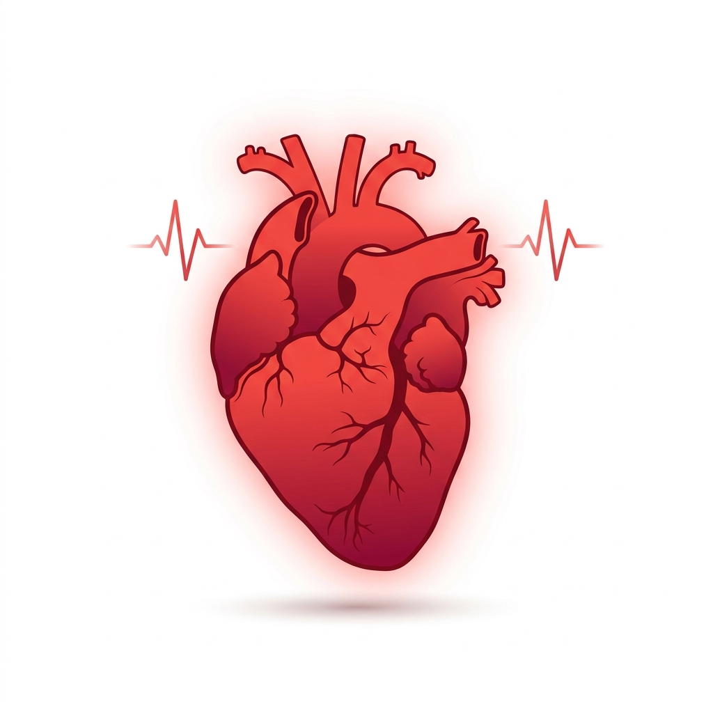

دراسة بحثية لقياس مستوى الوعي المجتمعي بصحة القلب
شارك في الاستبيانتهدف هذه الدراسة إلى قياس مستوى الوعي بصحة القلب وعوامل الخطر المرتبطة به لدى أفراد المجتمع، وذلك من خلال استبيان إلكتروني يغطي عدة محاور أساسية مثل: عوامل الخطر، والأعراض التحذيرية، وعادات نمط الحياة، ومعرفة الوقاية. النتائج ستُستخدم لأغراض بحثية علمية بحتة.
قياس مستوى المعرفة والوعي بأمراض القلب وعوامل الخطر المؤدية إليها لدى المجتمع
البيانات الشخصية • عوامل الخطر • الأعراض • نمط الحياة • الوقاية والمعرفة
جميع البيانات سرية وتُستخدم للأغراض البحثية فقط، ولا تُشارك مع أي جهة خارجية
عرض توضيحي لكيفية تقديم النتائج بعد تحليل ردود المشاركين
مشاركتك تساهم في إثراء البحث العلمي وتعزيز الوعي بصحة القلب في مجتمعنا
الاستبيان لا يستغرق أكثر من 5 دقائق
جميع الردود تبقى سرية وتُستخدم للأغراض البحثية فقط